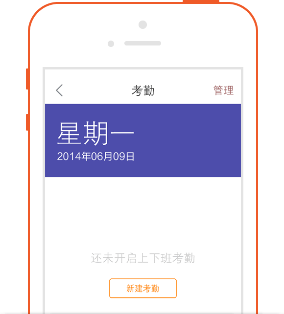

怎么使用市场活动
口袋助理用户操作指引系列
-
一,市场活动-新增
-
进入“CRM-市场活动”点击界面右上角的“＋”号，即可到达新增界面

-
可通过增加更多条目，维护更多活动相关的信息

-
二,市场活动-转移
-
当员工由于手上活动过多、即将休假等导致无法继续负责该市场活动时，可把该活动转移给其他同事负责。
-
进入到该市场活动详细界面，点击右上角“...”，接着点击“转移给他人”，选择你需要转移的人员即可把市场活动转移他人负责。转移成功后，该时候藏活动，就不会显示在“我负责的市场活动”界面。

-
三,市场活动-跟进任务
-
可以根据活动的具体安排，给相关员工安排任务。（比如，举办一次买赠促销活动，该活动需要采购赠送的物品，这时候就可以直接给采购部的员工安排一个采购物品的任务。）
进入到该市场活动详细界面，点击“任务”按钮，进入到我的任务界面，点击界面右上角的“＋”号，可为自己安排任务也可为别人跟创建任务，负责人字段选择自己时，即为自己安排任务，负责人选择别人时，即为别人创建任务。
-
四,市场活动-查看文
-
进入到该市场活动详细界面，点击“文档”按钮，可查看网页端上传的该活动相关资料。

-
五,市场活动-关联销售线索
-
进入到该市场活动详细界面，点击界面右上角的“...”可直接选择新增该市场活动相关的销售线索；活动详情界面，点击“销售线索”按钮，可查看该市场活动相关的销售线索，点击当前销售线索界面右上角的“＋”号，也可直接新增该市场活动相关的销售线索。